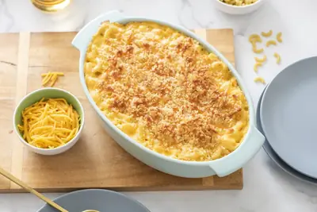

Old-Fashioned Macaroni and Cheese

Ingredients
- 1 tablespoon butter, melted
- 1 cup panko bread crumbs
- 1/2 cup grated cheddar cheese
- 3 tablespoons unsalted butter
- 3 tablespoons flour
- 3 cups whole milk
- 4 cups grated cheddar cheese (shred it yourself for best melting!)
- 1 pound elbow macaroni (you can also use campanelle, cavatappi, or shells)
Steps
- Place the topping ingredients in a bowl and stir to combine.
- Preheat oven to 400° F.
- Cook pasta in salted water* for about 3 minutes less than package directions call for, until al dente, reserving half a cup of the pasta water.
- In a large pot melt the butter and then add the flour, whisking continuously over low-medium heat for 2-3 minutes to make a roux.
- Slowly whisk in the milk and bring to a boil.
- Reduce heat and simmer, whisking occasionally, 3 to 4 minutes, or until sauce is gently bubbling and starting to thicken.
- Add reserved pasta water and cheddar cheese and whisk until melted.
- Stir in the pasta.
- Transfer to a greased 9"x13" baking dish.
- Sprinkle topping on macaroni and cheese.
- Bake for 30-40 minutes, or until top is golden and bubbling.
Recipe by Weelicious, from Weelicious. Saved here for personal use; the original has the full notes, tips and photos. Open original